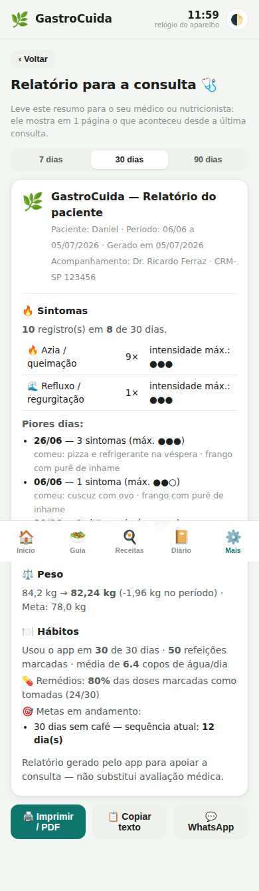
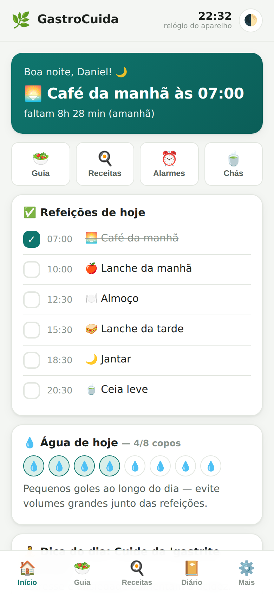
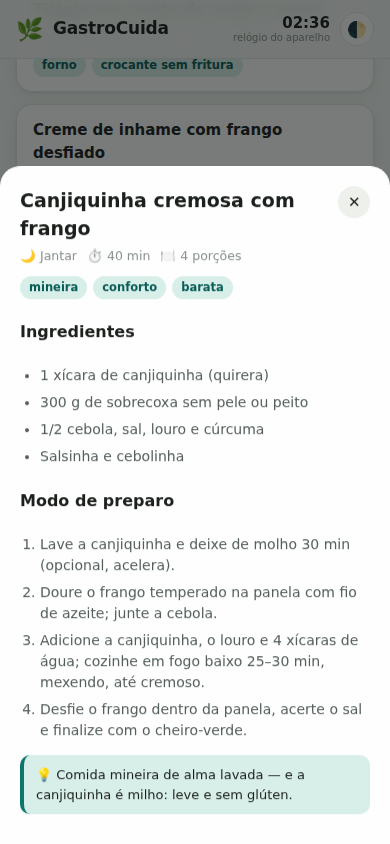
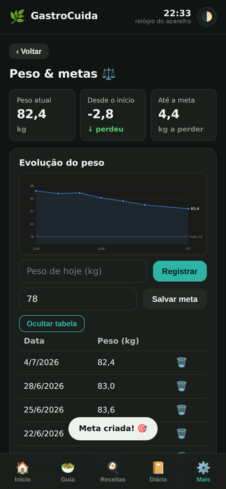

O GastroCuida é um aplicativo de acompanhamento para pacientes com gastrite e refluxo (DRGE), personalizado com a marca do seu consultório. O paciente segue a dieta em casa — e volta à consulta com um relatório completo.
Sem sistema para instalar no consultório, sem treinamento, sem mensalidade de servidor. Três passos:
Seu nome, CRM, especialidade, clínica e WhatsApp entram no app: nas boas-vindas, na tela Sobre e no cabeçalho do relatório que o paciente leva às consultas.
Você entrega um link (ou QR code na recepção). O paciente adiciona à tela inicial do celular — funciona em Android e iPhone, sem loja de aplicativos.
Alarmes de refeição e remédio, diário de sintomas e peso. Na consulta seguinte, o relatório mostra o que aconteceu de verdade entre as consultas.
Gerado pelo próprio paciente em um toque — impresso, em PDF ou direto no seu WhatsApp:

Educação alimentar contínua — aquilo que não cabe nos 20 minutos de consulta:
163 alimentos classificados (pode / moderação / evitar / cautela) com o porquê e o modo de preparo: carnes, ovos, frutas, raízes, chás — incluindo espinheira-santa e o alerta correto sobre babosa.
Café, almoço, jantar e lanches com busca por ingrediente: crepioca, congee de crise, molho de abóbora no lugar do tomate, airfryer, canjiquinha…
Comer a cada 3h e tomar o IBP em jejum viram rotina com alarme sonoro — e o app avisa se o jantar está perto demais da hora de dormir.
Azia, refluxo, dor, náusea — com hora e intensidade. Em duas semanas, o padrão dos gatilhos individuais aparece.
Gráfico de evolução, meta de peso e desafios de hábito com sequência de dias para engajar.
Cabeceira elevada, dormir do lado esquerdo, mastigação — e as frutas e legumes da estação, mês a mês.
Ou melhor: abra a demonstração interativa com uma paciente fictícia e 5 semanas de uso.



Os dados do paciente ficam somente no aparelho dele — nada é enviado a servidores. Não há cadastro, senha ou banco de dados: o paciente é dono dos próprios registros e decide o que compartilhar com você (o relatório). Para o consultório, isso significa zero custo de infraestrutura e zero risco de vazamento.
Não. É um PWA (Progressive Web App): o paciente abre o seu link e adiciona à tela inicial. Funciona em Android e iPhone, inclusive offline depois da primeira visita.
O conteúdo-base é mantido por nós e pode ser ajustado sob demanda para o seu consultório — por exemplo, incluir suas orientações padrão na tela de boas-vindas.
Não — e isso é proposital. Ele é uma ferramenta educativa e de organização, com aviso médico permanente. Diagnóstico e conduta continuam sendo seus.
Licença por médico/clínica com personalização incluída. Fale com a gente para conhecer os planos.
Coloque o acompanhamento da gastrite e do refluxo no bolso do seu paciente — com o seu nome na tela.
📩 Falar com a gente